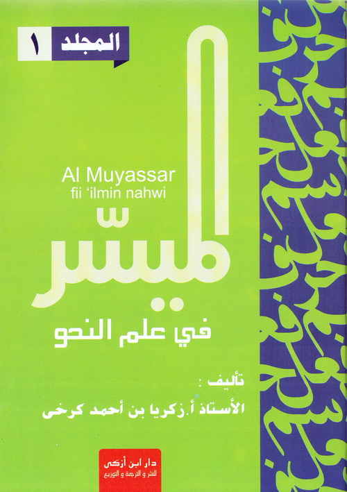

Kata Pengantar
 Segala puji bagi Allah yang telah menurunkan al-Quran dalam bahasa Arab dan telah memberikan kemudahan dalam mempelajarinya.
Aku bersaksi bahwa tiada Tuhan yang berhak disembah melainkan Allah semata dan Aku bersaksi bahwa Nabi Muhammad
Shalllallahu 'alaihi wa Sallam adalah utusan Allah yang diutus dengan membawa ajaran dan pedoman untuk kebahagiaan hidup
manusia di dunia dan akhirat.
Wa ba'du
Semoga rangkuman ini bermanfaat bagi kaum muslimin yang ingin mempelajari bahasa arab sebagai dasar menuntut ilmu agama